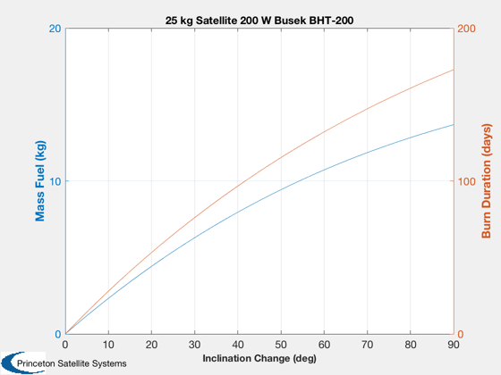
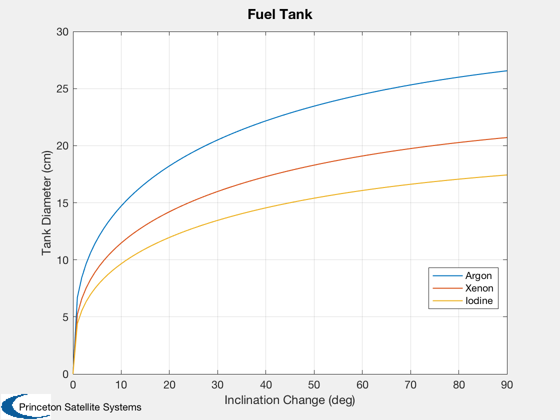

Contents
Inclination Change
Computes the duration of burns for inclination changes from 0 to 90 degrees using a Busek BHT-200 200 Watts 1375 sec, 13 mN It also computes the tank diameter for argon and xenon fuels.
%-------------------------------------------------------------------------- % Copyright (c) 2016 Princeton Satellite Systems, Inc. % All rights reserved. %--------------------------------------------------------------------------
Inputs
rhoAr = 1395; % Liquid kg/m^3 rhoXe = 2942; % Liquid kg/m^3 rhoI = 4933; % Liquid kg/m^3 altOrbit = 600; % km secToDays = 86400; mI = 25; % Initial mass in kg deltaI = linspace(0,pi/2); % Inclination changes in radians e = 0; % Eccentricity nu = 0; % True anomaly vE = 1375*9.806/1000; % Exhaust velocity km/s thrust = 13e-3; % N
Fuel mass
mu = 3.98600436e5; % Earth's gravitational parameter r = altOrbit + 6378.165; % Orbit v = sqrt(mu/r); % Circular orbit velocity deltaV = OrbMnvrInclination( v, e, nu, deltaI ); mR = exp(deltaV.total/vE); % The rocket equation mF = mI*(mR-1)./mR; % Fuel mass mAve = mI-mF/2; % Average mass duration = mAve.*deltaV.total*1000/(thrust*secToDays); s = sprintf('%2.0f kg Satellite 200 W Busek BHT-200',mI); PlotDoubleYAxis( deltaI*180/pi,mF,duration,... 'Inclination Change (deg)',... 'Mass Fuel (kg)',... 'Burn Duration (days)',... s,'Plane Change');
Compute the tank sizes
n = length(deltaI); d = zeros(3,n); rho = [rhoAr rhoXe rhoI]; f = (4/3)*pi; for k = 1:3 v = mF/rho(k); d(k,:) = 200*(v/f).^(1/3); end Plot2D( deltaI*180/pi, d, 'Inclination Change (deg)',... 'Tank Diameter (cm)','Fuel Tank'); legend('Argon','Xenon','Iodine','location','best'); %-------------------------------------- % PSS internal file version information %--------------------------------------